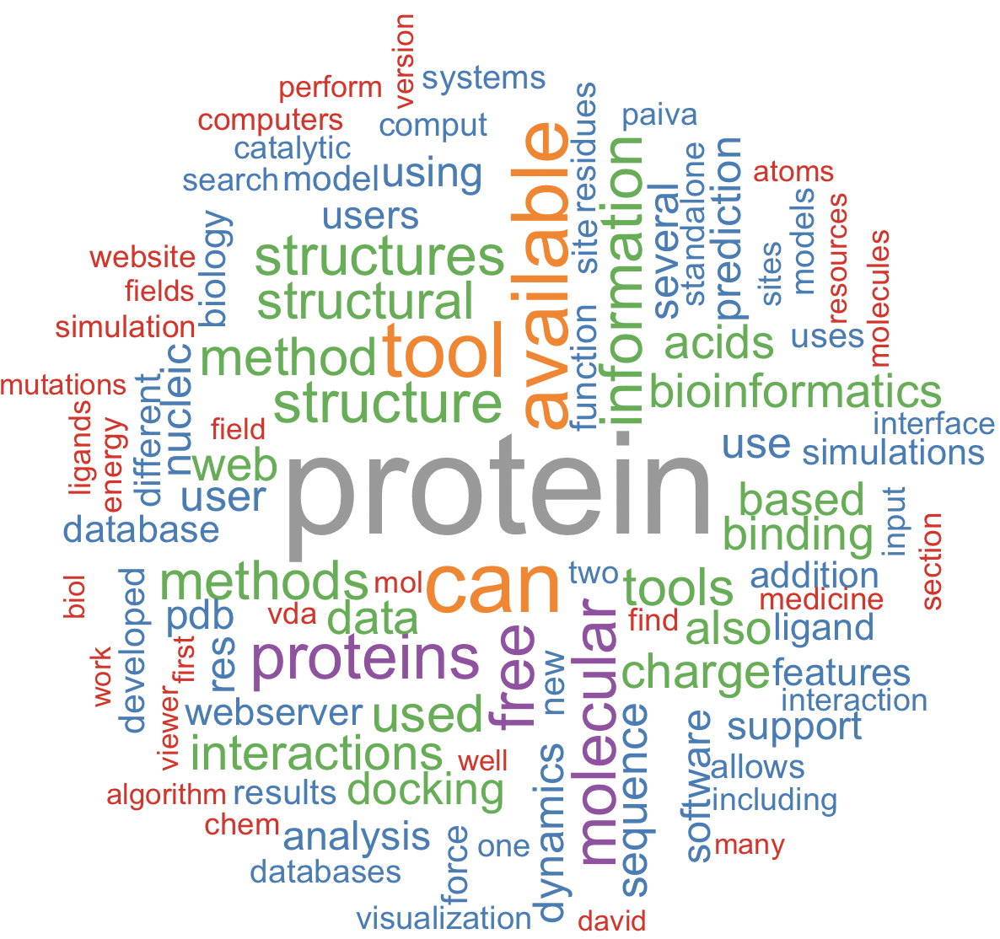

Session 32 – Miscellaneous
We will post miscellaneous code developed during class or requested by you in this chapter. We will keep updating this list as the semester progresses.
32.1 Sampling from a vector of names
We need that 2-3 students give a presentation about the topics of previous class every week, so we can use R to do the selection for us. We will use the function sample
## We need a list of the 17 students last names for BIO/BIT 209 as their unique identifiers
students_BIO209 <- c("Ardire", "Carlucci", "Da_Costa_Morais", "Davidov", "Deda",
"Dimitrijevic", "Fasano", "Javed", "Mahadeo", "Mowla", "Njie",
"Rahman", "Siddique", "Sukhram","Tan", "Tiumalu", "Vu")
students_BIO209
#[1] "Ardire" "Carlucci" "Da_Costa_Morais" "Davidov" "Deda"
#[6] "Dimitrijevic" "Fasano" "Javed" "Mahadeo" "Mowla"
#[11] "Njie" "Rahman" "Siddique" "Sukhram" "Tan"
#[16] "Tiumalu" "Vu"
## we order them alphabetically
students_BIO209_order <- sort(students_BIO209)
students_BIO209_order
#[1] "Ardire" "Carlucci" "Da_Costa_Morais" "Davidov" "Deda"
#[6] "Dimitrijevic" "Fasano" "Javed" "Mahadeo" "Mowla"
#[11] "Njie" "Rahman" "Siddique" "Sukhram" "Tan"
#[16] "Tiumalu" "Vu"
## numeric code for each student
students_BIO209_order_c <- paste(1:17, students_BIO209_order, sep = "_")
students_BIO209_order_c
#[[1] "1_Ardire" "2_Carlucci" "3_Da_Costa_Morais" "4_Davidov" "5_Deda"
#[6] "6_Dimitrijevic" "7_Fasano" "8_Javed" "9_Mahadeo" "10_Mowla"
#[11] "11_Njie" "12_Rahman" "13_Siddique" "14_Sukhram" "15_Tan"
#[16] "16_Tiumalu" "17_Vu"
## we sample 2 students to give a review of last class
todays_2_students_code <- sample(1:17, size = 2, replace = FALSE, prob = NULL)
todays_2_students_code
#[1] 16 13
## we identify such students by name
today_students <- students_BIO209_order_c[todays_2_students_code]
today_students
#[1] "16_Tiumalu" "13_Siddique"
## NEXT WEEK: we need 2 students again, but we want to remove those that already gave a lesson
remaining_students_code <- setdiff(1:17, c(16,13))
remaining_students_code
#[1] 1 2 3 4 5 6 7 8 9 10 11 12 14 15 17
## NEXT WEEK: we sample 2 students to give a review of last class
todays_2_students_code <- sample(remaining_students_code, size = 2, replace = FALSE, prob = NULL)
todays_2_students_code
#[1] 7 15
## NEXT WEEK: we identify such students by name
today_students <- students_BIO209_order_c[todays_2_students_code]
today_students
#[1] "7_Fasano" "15_Tan"32.2 Read a text from an article pdf
We can often summarize a pdf of paper or article using a world cloud. For this purpose, we need to read a pdf from our desktop using the R-package pdftools and read the text to a vector using tm: Text Mining Package.
## We need to install and load some R-packages
install.packages("pdftools")
library(pdftools)
install.packages("tm")
library(tm)
## file path to my pdf file
my_pdf_file_path <- "~/Desktop/Teach_R/class_pages_reference/bioinformatics_gitbook_1/my_working_directory/Almeida_Paiva_etal_2022.pdf"
## read pdf text to a vector
pdf_text <- pdf_text(my_pdf_file_path, opw = "", upw = "")
## remove special characters like "–"
pdf_text <- gsub("–"," ", pdf_text)
## create a text vector from pdf text and remove unwanted characters
docs <- Corpus(VectorSource(pdf_text))
docs <- tm_map(docs, removeNumbers)
docs <- tm_map(docs, removePunctuation)
docs <- tm_map(docs, stemming)
docs <- tm_map(docs, stripWhitespace)
docs <- tm_map(docs, content_transformer(tolower))
my_pdf_corpus <- tm_map(docs, removeWords, stopwords("english"))
my_pdf_corpus
#<<SimpleCorpus>>
#Metadata: corpus specific: 1, document level (indexed): 0
#Content: documents: 28
## we process the my_text_pdf to a term-document matrix (tdm or TDM). This TDM stores counts of terms for the pdf document using the tm function 'TermDocumentMatrix'.
my_pdf_corpus_tdm <- TermDocumentMatrix(my_pdf_corpus)
inspect(my_pdf_corpus_tdm)
#<<TermDocumentMatrix (terms: 4796, documents: 28)>>
#Non-/sparse entries: 9858/124430
#Sparsity : 93%
#Maximal term length: 50
#Weighting : term frequency (tf)
#Sample :
# Docs
#Terms 16 2 20 21 24 25 26 3 5 8
# available 5 5 4 6 0 0 0 4 4 8
# can 6 9 8 7 1 0 0 6 8 13
# free 2 0 1 2 0 0 0 0 3 2
# information 6 1 4 7 0 0 1 0 2 4
# molecular 0 4 0 3 3 7 0 6 14 14
# protein 50 13 18 15 1 0 5 18 4 3
# proteins 8 7 8 3 2 3 2 2 3 2
# structure 1 6 6 7 1 0 2 2 1 4
# structures 5 7 6 5 0 0 0 6 1 7
# tool 13 8 5 8 0 0 1 4 9 9
## we create a matrix of word as a dataframe to be analyzed
pdf_matrix <- as.matrix(my_pdf_corpus_tdm)
pdf_words <- sort(rowSums(pdf_matrix),decreasing=TRUE)
pdf_df_for_map <- data.frame(word = names(pdf_words),freq=pdf_words)
head(pdf_df_for_map)
# word freq
#protein protein 260
#can can 143
#available available 127
#tool tool 124
#proteins proteins 98
#molecular molecular 9232.3 Read a text from a website
We can often summarize a website using a world cloud. For example, the page on Wikipedia corresponding to bioinformatics.
## We need to install and load some R-packages
install.packages("htm2txt")
library(htm2txt)
## create a vector with our selected url (website link address)
url <- 'https://en.wikipedia.org/wiki/Bioinformatics'
## get the text on the website as a vector
my_text_url <- gettxt(url)
my_text_url
## remove some garbage symbols like •
my_text_url <- gsub("•","",my_text_url)
## create a text vector from pdf text and remove unwanted characters
docs <- Corpus(VectorSource(my_text_url))
docs <- tm_map(docs, removeNumbers)
docs <- tm_map(docs, removePunctuation)
docs <- tm_map(docs, stemming)
docs <- tm_map(docs, stripWhitespace)
docs <- tm_map(docs, content_transformer(tolower))
my_url_corpus <- tm_map(docs, removeWords, stopwords("english"))
my_url_corpus
#<<SimpleCorpus>>
#Metadata: corpus specific: 1, document level (indexed): 0
#Content: documents: 1
## we process the my_url_corpus to a term-document matrix (tdm or TDM). This TDM stores counts of terms for the url document using the tm function 'TermDocumentMatrix'.
my_url_corpus_tdm <- TermDocumentMatrix(my_url_corpus)
inspect(my_url_corpus_tdm)
#<<TermDocumentMatrix (terms: 2709, documents: 1)>>
#Non-/sparse entries: 2709/0
#Sparsity : 0%
#Maximal term length: 52
#Weighting : term frequency (tf)
#Sample :
# Docs
#Terms 1
# analysis 74
# bioinformatics 126
# biology 112
# computational 66
# data 70
# gene 48
# genome 52
# information 49
# protein 76
# sequence 62
## we create a matrix of word as a dataframe to be analyzed
url_matrix <- as.matrix(my_url_corpus_tdm)
url_words <- sort(rowSums(url_matrix),decreasing=TRUE)
url_df_for_map <- data.frame(word = names(url_words),freq=url_words)
head(url_df_for_map)
# word freq
#bioinformatics bioinformatics 126
#biology biology 112
#protein protein 76
#analysis analysis 74
#data data 70
#computational computational 6632.4 Read a text from a file
We can often summarize a text file using a world cloud. For example, your CANVAS responses about this bioinformatic class. Here is an text derived from this paper Ten simple rules for biologists learning to program by Maureen A. Carey and Jason A. Papin.
## my path to my text file
my_text_file <- '~/Desktop/Teach_R/class_pages_reference/bioinformatics_gitbook_1/my_working_directory/Carey_Papin_2018_text.txt'
## read text file as a vector
my_text <- paste(readLines(my_text_file),collapse=" ")
my_text
## remove some garbage symbols like •
my_text <- gsub("•","",my_text)
## create a text vector from pdf text and remove unwanted characters
docs <- Corpus(VectorSource(my_text))
docs <- tm_map(docs, removeNumbers)
docs <- tm_map(docs, removePunctuation)
docs <- tm_map(docs, stemming)
docs <- tm_map(docs, stripWhitespace)
docs <- tm_map(docs, content_transformer(tolower))
my_text_corpus <- tm_map(docs, removeWords, stopwords("english"))
my_text_corpus
#<<SimpleCorpus>>
#Metadata: corpus specific: 1, document level (indexed): 0
#Content: documents: 1
## we process the my_text_corpus to a term-document matrix (tdm or TDM). This TDM stores counts of terms for the text vector using the tm function 'TermDocumentMatrix'.
my_text_corpus_tdm <- TermDocumentMatrix(my_text_corpus)
inspect(my_text_corpus_tdm)
#<<<TermDocumentMatrix (terms: 1255, documents: 1)>>
#Non-/sparse entries: 1255/0
#Sparsity : 0%
#Maximal term length: 70
#Weighting : term frequency (tf)
#Sample :
# Docs
#Terms 1
# biology 18
# can 15
# code 14
# computational 30
# data 18
# language 21
# languages 19
# learn 14
# rules 17
# simple 16
## we create a matrix of word as a dataframe to be analyzed
text_matrix <- as.matrix(my_text_corpus_tdm)
text_words <- sort(rowSums(text_matrix),decreasing=TRUE)
text_df_for_map <- data.frame(word = names(text_words),freq=text_words)
head(text_df_for_map)
# word freq
#computational computational 30
#language language 21
#languages languages 19
#biology biology 18
#data data 18
#rules rules 1732.5 Generate the word cloud
There are many visual and descriptive representation or summaries of text data, which usually involve a presentation of key words (e.g., those used more frequently) on text, books, tweets, websites, etc. We can use a world cloud to summarize the frequency of single words, and the importance of each world could be shown with its font size and color. Three main reasons to use a world cloud might include: (1) To present text data in a clear and simple format, (2) To communicate basic insights based on a large corpus of text (e.g., a speech, a publication, a book, a website), and (3) To visually engage an audience so they can get the gist (i.e., essence or the main point) and draw insights quickly and, at the same time, allowing for some flexibility in their interpretation. For more insight see these links: Céline Van den Rul and here. We need to read text from a file, pdf, website as indicated previously. There are many online word-cloud, but for this course we use two R-packages: wordcloud and wordcloud2
## We need to install and load some R-packages
install.packages("wordcloud")
library(wordcloud)
install.packages("wordcloud2")
library(wordcloud2)32.6 worldcloud – PDF
set.seed(1234) # for reproducibility
wordcloud(words = pdf_df_for_map$word,
freq = pdf_df_for_map$freq,
min.freq = 2,
max.words = 100,
random.order = FALSE,
rot.per = 0.35,
colors = brewer.pal(9, "Set1"))
We can also use wordcloud2, which has more options and opens in a browser.
wordcloud2(data=pdf_df_for_map, size = 1, color = "random-light", backgroundColor = "white")32.7 worldcloud – website
set.seed(1234) # for reproducibility
wordcloud(words = url_df_for_map$word,
freq = url_df_for_map$freq,
min.freq = 2,
max.words = 100,
random.order = FALSE,
colors = brewer.pal(7, "Accent"))We can also use wordcloud2, which has more options and opens in a browser.
wordcloud2(data=url_df_for_map, size = 0.6, color='random-dark', shape = 'diamond', backgroundColor = "grey")32.8 worldcloud – text
set.seed(1234) # for reproducibility
wordcloud(words = text_df_for_map$word,
freq = text_df_for_map$freq,
min.freq = 2,
max.words = 100,
random.order = FALSE,
rot.per = 0.35,
colors = brewer.pal(7, "Dark2"))We can also use wordcloud2, which has more options and opens in a browser.
wordcloud2(data=text_df_for_map, size = 0.7, color='random-dark', backgroundColor = "black")32.9 Miscellaneous
PLACE HOLDER
## PLACE HOLDER
mtcars_data <- mtcars
## PLACE HOLDER
mtcars_names_vector <- rownames(mtcars_data)